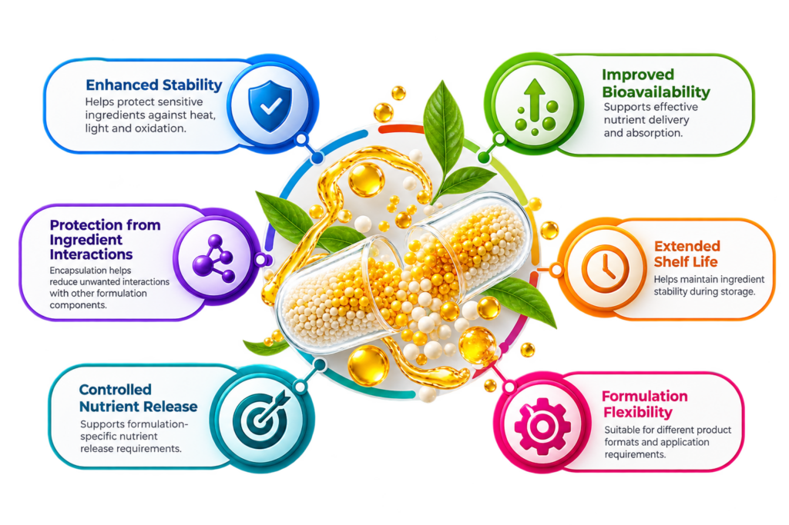
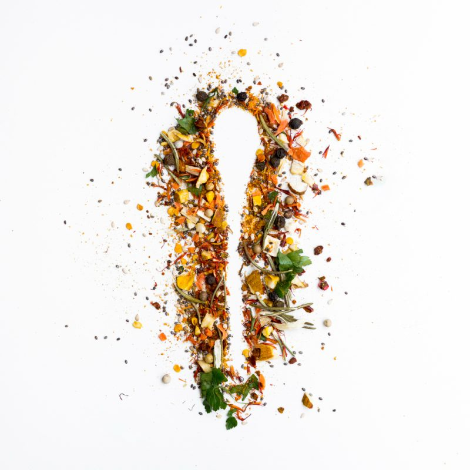
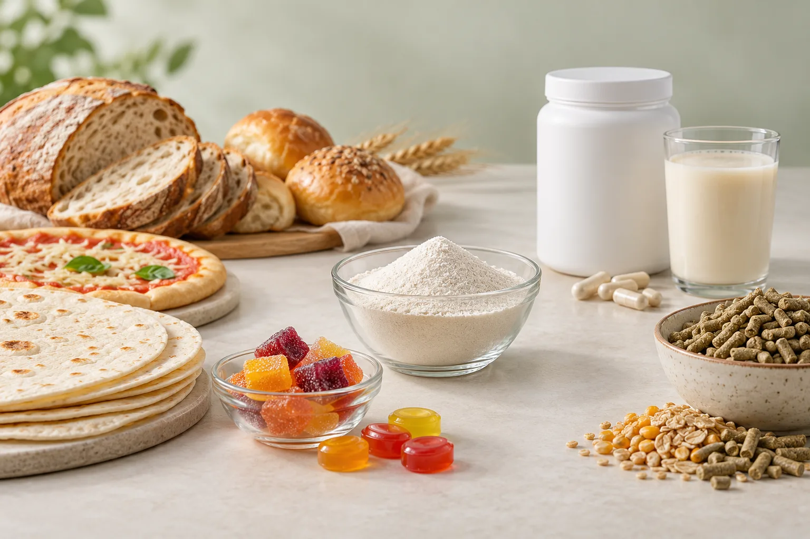

Девять ключевых продуктовых линеек PHS Life Sciences: витамины, креатин, минералы, ароматизаторы, подкислители и консерванты. Подбираем решение под рецептуру, процесс и задачу продукта.

Каждая линейка решает свой класс задач — от защиты витаминов до управления высвобождением кислоты в кондитерке.

Водорастворимый креатин для прозрачных напитков, шотов и мармелада.
Подробнее
Термостабильные микрогранулы с маскировкой вкуса для жевательных мармеладок.
Подробнее
Растительная ниосомальная доставка витаминов, минералов и каротиноидов.
Подробнее
Микроинкапсуляция кислот, консервантов, минералов и функциональных ингредиентов.
Подробнее
Жирорастворимые витамины в микрогранулах: стабильность и биодоступность.
Подробнее
Витамины D3 и K2 в одной микрогрануле — точное дозирование и стабильность.
Подробнее
Консервирование с чистой этикеткой на натуральных ингредиентах.
Подробнее
Инкапсуляция ароматизаторов: стабильность, маскировка, контролируемое высвобождение.
ПодробнееПодкислители для кислой кондитерки: кислинка раскрывается во вкусе.
ПодробнееТехнологии PHS применяются в пищевой, нутрицевтической и кормовой промышленности. Под каждую категорию подбирается ингредиент, форма и дозировка.
PHS Life Sciences разрабатывает и производит микроинкапсулированные ингредиенты для пищевой, нутрицевтической и кормовой промышленности. В разделе собраны девять продуктовых линеек — от витаминов и креатина до ароматизаторов и подкислителей.
Эксимин — эксклюзивный дистрибьютор PHS Life Sciences в России: помогает подобрать технологию, получить образцы, спецификации и документацию, а также провести испытания в рецептуре.

Расскажите о продукте и задаче — пришлём образцы, спецификации и данные по применению.